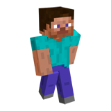

Minecraft
Minecraft — игра для любителей ставить блоки друг на друга и находить приключения на свою голову.

Craft
Крафт (крафтинг, от англ. crafting) — это способ получения большей части существующих в Minecraft блоков и предметов. Крафт был добавлен в версии Indev.
Для того, чтобы скрафтить что-либо, игроку нужно определённым образом разместить в сетке крафта необходимые ресурсы.В инвентаре игрок может воспользоваться сеткой крафта 2х2. Для работы с сеткой 3х3 нужно создать и установить верстак.
- Для крафта нужно иметь определённые ингредиенты.
- Доски, каменный кирпич, песчаник и шерсть могут быть любого вида. Однако покрасить можно только белую шерсть.
- Ингредиенты должны быть расположены определённым образом друг относительно друга, за некоторыми исключениями. Если порядок в данном рецепте не важен, им можно воспользоваться и в инвентаре, если, конечно, все необходимые ингредиенты помещаются в сетку 2х2. Пример таких рецептов: красители, цветная шерсть, тушёные грибы, приготовленный паучий глаз, огненный шар
- Расположение ингредиентов в сетке крафта не имеет значения. Например, факел можно скрафтить, поместив уголь над палкой в любом из 2 вариантов в сетке 2х2 или любом из 6 — для 3х3.
- За каждый крафт (за каждый щелчок по иконке результата) будет использован только один ингредиент из каждой ячейки. Если при этом зажать ⇧ Shift, будет сделано максимально возможное количество предметов.
- Если рецепт несимметричен относительно вертикальной оси, его можно сделать любым образом. Например, рецепт мотыги можно получить из рецепта лопаты добавлением материала как слева, так и справа. Рецепты, обладающие этим свойством: топор, мотыга, огниво, ножницы, ступени, удочка и лук.
Steve
Стив — протагонист игры Minecraft, который занимается выживанием, фермерством, приключениями и строительством в кубическом мире.
В игре Minecraft имеется возможность выбрать любой скин главного героя, однако стандартный скин, известный как Стив, имеет следующий внешний вид:Квадратный человек ростом в 31 пиксель, с тёмно-коричневыми волосами и голубыми глазами. Стив одет в бирюзовую рубашку с короткими рукавами и синие штаны. Также, в ранних версиях и на LEGO-фигурке у Стива имеется бородка. В целом, можно сказать, что Стив имеет сходство с Томми Версетти из игры «GTA: Vice City».
Так как в игре Minecraft имеется лишь примитивный сюжет, который является далеко не главным элементом игры, у Стива полностью отсутствует характер. Тем менее, если учесть, что Minecraft — игра про творчество, то можно выделить следующие способности и навыки героя:
- Стив является великолепным мастером, способным изготавливать сложные инструменты из подручных материалов
- Стив обладает навыками шахтёра и живой воды
- Стив обладает способностью к зельеваренью и кулинарии
- Стив является строителем, и легко может возводить строения
- Стив не говорит (общение между персонажами происходит при помощи чата)
- По подсчёту некоторых игроков, максимальный вес, который может поднять Стив, приближается к бесконечности
- В творческом режиме Стив является всемогущим и бессмертным (за исключением выпадения из мира и команды /kill)
Как и упоминалось раннее, в Minecraft сюжет присутствует на примитивном уровне. Более того, сюжет даже не обязательно проходить. Тем не менее, если всё же проходить сюжет, то история Стива будет примерно такой: Стив материализуется в игровом мире. Чтобы получить полные способности создавать предметы, он срубает дерево и делает из него верстак. Благодаря верстаку и дереву, герой делает первые деревянные инструменты, чтобы облегчить труд и выживание. Стив строит себе дом, а также начинает копать шахты, в которых будет находить разные руды и прочие минеральные ресурсы, из которых сможет изготавливать более сложные инструменты и виды брони. Также, по желанию он может завести себе ферму с животными и посевами, что облегчит ему выживание. Также, зачастую Стив должен противостоять монстрам. За время пребывания в мире Стив создаёт алмазную кирку, которая помогает ему добыть обсидиан. Из обсидиана и огнива он делает портал в ад, где может добыть стержни ифрита, из которых можно сделать огненный порошок. Вернувшись из ада, Стив убивает эндермена (Странника Края) и получает его глаз. Смешав огненный порошок с жемчугом эндермена, он получает глаз эндера, благодаря которому он находит подземную крепость с порталом в Энд (Край). Стив вставляет глаза эндера в портал, и прыгает туда. Он перемещается на родину эндеров — в Энд (Край), где вступает в схватку с драконом Эндера (Края). После убийства дракона, герой получает множество очков опыта, прыгает в новый портал и получает яйцо дракона. В творческом режиме Стив является бессмертным всемогущим существом, который волен создавать и разрушать всё, что хочет. Также он может призывать любых существ и получать любые предметы.
Наверх